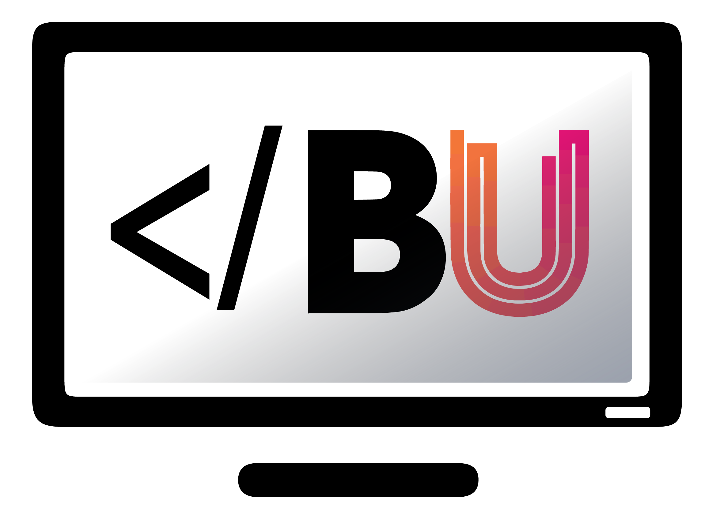
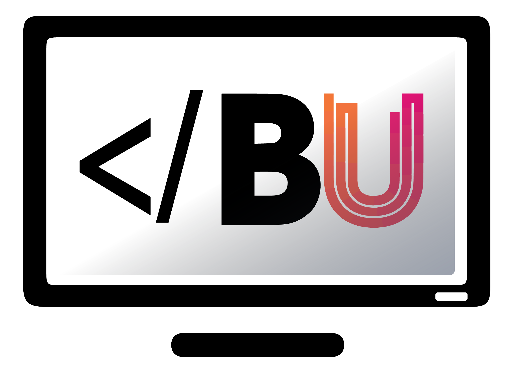

About
The BU Computing Society was founded in October 2017.
Our aims are:
- To provide members with opportunities to practice and develop their computing skills in a more casual way.
- Appeal to students of all pathways on the computing course.
- Appeal to non-computing students.
We do this through working on projects, running RoboCode competitions and mini hackathons.